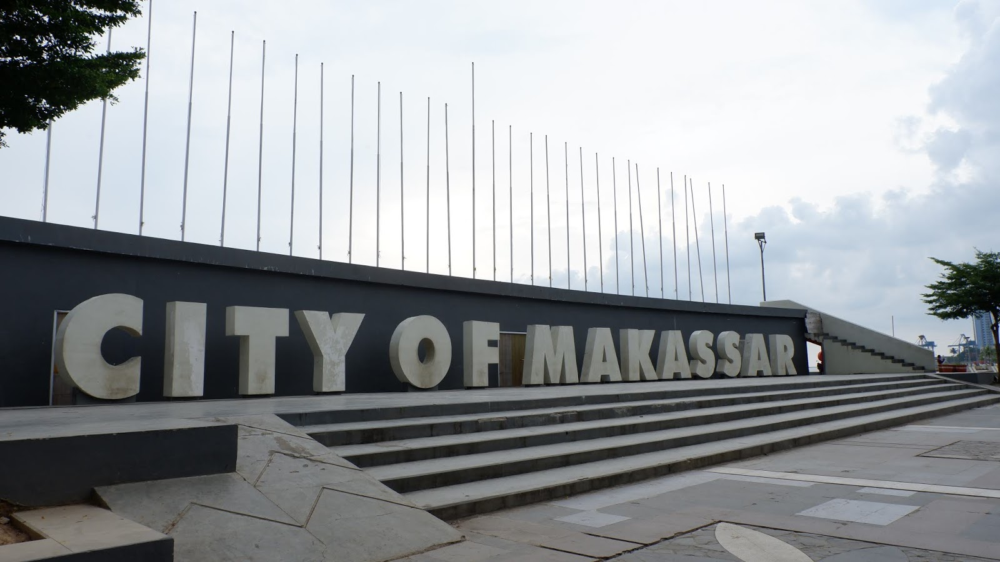
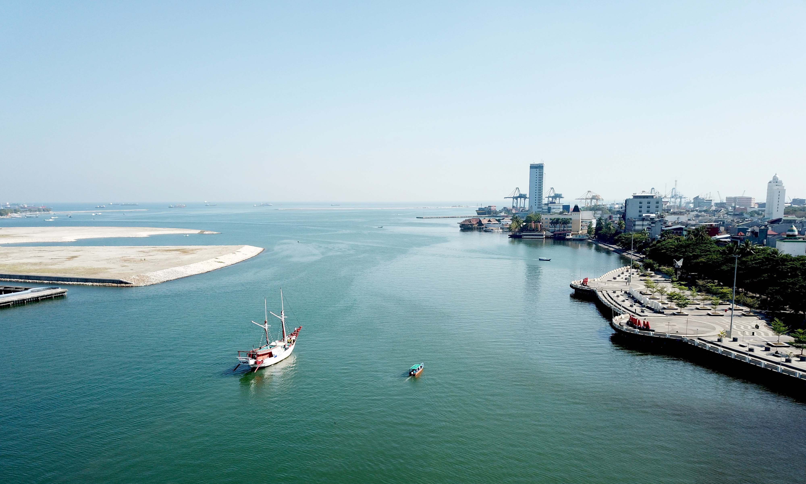
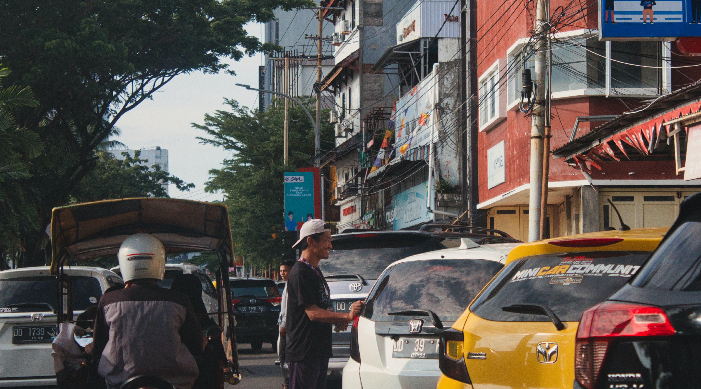
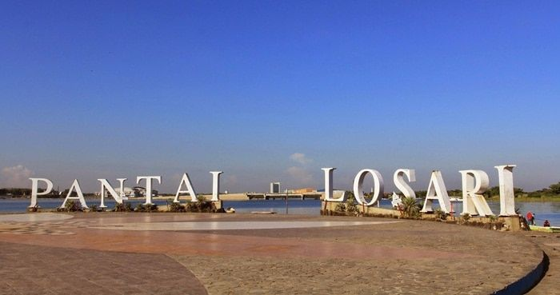
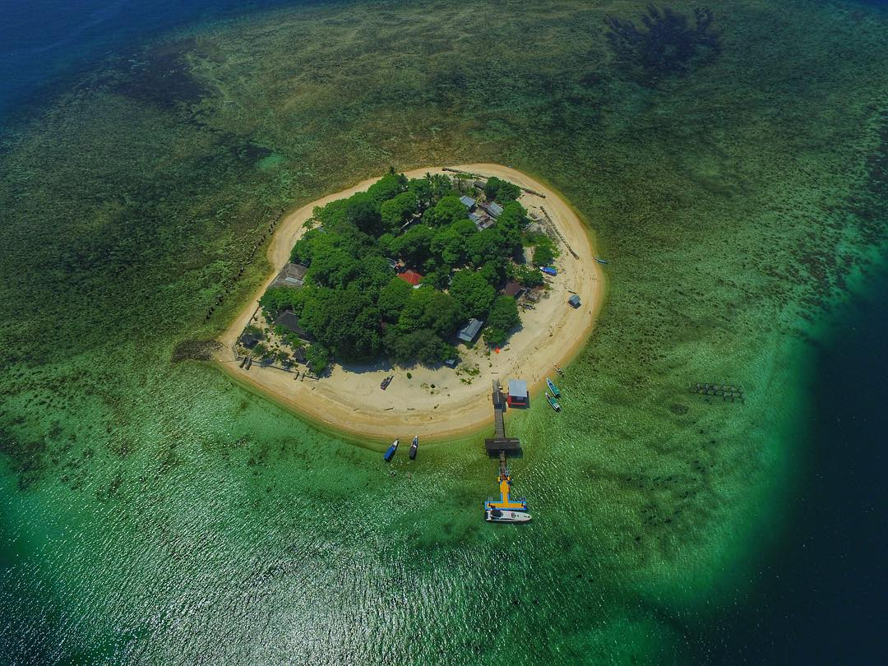
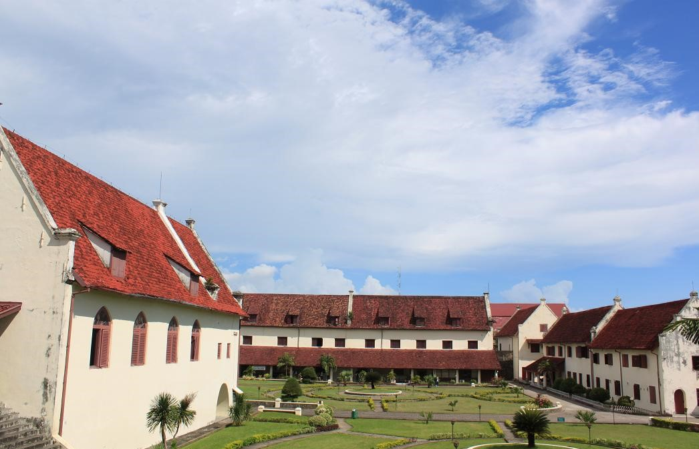
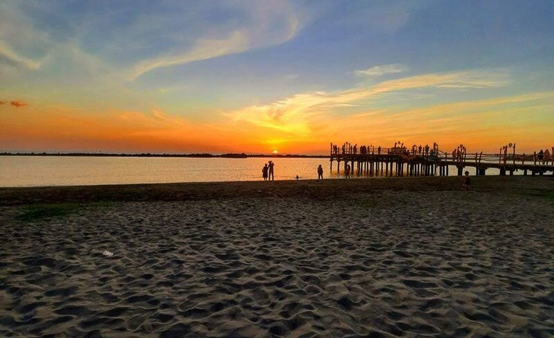

Sejarah

Nama Makassar sudah disebutkan dalam pupuh 14/3 kitab Nagarakretagama karya Mpu Prapanca pada abad ke-14,
sebagai salah satu daerah taklukkan Majapahit. Walaupun demikian, Raja Gowa ke-9 Tumaparisi Kallonna (1510-1546)
diperkirakan adalah tokoh pertama yang benar-benar mengembangkan kota Makassar. Ia memindahkan pusat kerajaan
dari pedalaman ke tepi pantai, mendirikan benteng di muara Sungai Jeneberang, serta mengangkat seorang syahbandar
untuk mengatur perdagangan.
Pada abad ke-16, Makassar menjadi pusat perdagangan yang dominan di Indonesia Timur, sekaligus menjadi salah satu
kota terbesar di Asia Tenggara. Raja-raja Makassar menerapkan kebijakan perdagangan bebas yang ketat, di mana seluruh
pengunjung ke Makassar berhak melakukan perniagaan di sana dan menolak upaya VOC (Belanda) untuk memperoleh hak monopoli
di kota tersebut.
Geografis

Makassar adalah Ibu Kota Provinsi Sulawesi Selatan, yang terletak di bagian Selatan Pulau Sulawesi yang dahulu disebut
Ujung Pandang, terletak antara 119º24’17’38” Bujur Timur dan 5º8’6’19” Lintang Selatan yang berbatasan sebelah Utara
dengan Kabupaten Maros, sebelah Timur Kabupaten Maros, sebelah selatan Kabupaten Gowa dan sebelah Barat adalah Selat Makassar.
Kota Makassar memiliki topografi dengan kemiringan lahan 0-2°(datar) dan kemiringan lahan 3-15° (bergelombang).
Luas Wilayah Kota Makassar tercatat 175,77 km persegi.
Kota Makassar adalah kota yang terletak dekat dengan pantai yang membentang sepanjang koridor barat dan utara dan juga dikenal
sebagai “Waterfront City” yang di dalamnya mengalir beberapa sungai seperti Sungai Tallo, Sungai Jeneberang, dan Sungai Pampang)
yang kesemuanya bermuara ke dalam kota. Kota Makassar merupakan hamparan daratan rendah yang berada pada ketinggian antara 0-25
meter dari permukaan laut.
Iklim

Kota Makassar memiliki kondisi iklim tropis yang bertipe iklim tropis muson (Am), hal tersebut ditandai dengan kontrasnya
jumlah rata-rata curah hujan di musim penghujan dan musim kemarau. Musim hujan biasanya berlangsung sejak bulan November
hingga bulan Maret dan musim kemarau berlangsung dari bulan Mei hingga bulan September. Wilayah Kota Makassar memiliki suhu udara
rata-rata berkisar antara 26,°C sampai dengan 29 °C. Rata-rata curah hujan per tahun di wilayah ini berkisar antara 2700–3200 milimeter.
Wisata
Makassar merupakan salah satu kota metropolitan yang ada di Indonesia bagian Timur. Tak heran jika banyak tempat wisata yang ada
di ibu kota Sulawesi Selatan itu. Bahkan banyak tempat wisata Makassar yang memiliki keunikan dan keindahan alam memikat.
Pantai Losari

Pantai Losari terletak di pulau Sulawesi dan menjadi ikon dari kota Makassar. Jadi tidak heran apabila wisatawan selalu mengunjungi
pantai ini ketika datang ke Makassar. Pantai Losari berada di sebelah barat Kota Makassar, Provinsi Sulawesi Selatan. Para pengunjung
sangat menikmati pemandangan indah yang disuguhkan oleh pantai ini.
Paling banyak wisatawan akan mengunjungi pantai ini pada sore hari menjelang matahari tenggelam. Pasalnya wisatawan akan melihat
langsung indahnya pemandangan matahari tenggelam di sekitar Pantai Losari. Apakah Anda anak senja yang suka dengan keindahan senja?
Jika iya, jangan lupa untuk mengunjungi Pantai Losari ketika berkunjung ke Makassar.
Pulau Samalona

Tempat wisata bahari di Makassar bukan hanya Pulau Lae-lae saja. Namun ada pulau kecil lain yang keindahannya mampu menghipnotis
para wisatawan yang datang berkunjung. Pulau ini bernama Pulau Samalona yang terletak di sebelah barat Kecamatan Wajo, Makassar.
Untuk mencapai pulau ini dari pusat Kota Makassar juga tidak jauh, hanya perlu menempuh jarak sekitar 7 km saja.
Di pulau ini Anda bisa melakukan berbagai aktivitas seru seperti snorkeling dan diving. Untuk penyewaan alat untuk snorkeling
dan diving pun juga cukup terjangkau. Hanya sekitar 50 ribu sampai 100 ribu saja Anda sudah bisa menyewa peralatan tersebut.
Pesona indah yang terpancar dari Pulau Samalona ini membuat Anda semakin betah liburan dan tidak ingin pulang.
Benteng Rotterdam

Apakah Anda suka dengan wisata budaya (Cultural Tourism)? Anda bisa mengunjungi Benteng Fort Rotterdam yang lokasinya tidak jauh
dari Pantai Losari. Benteng Fort Rotterdam menjadi salah satu tempat bersejarah bagi masyarakat Makassar. Hal ini dikarenakan
benteng tersebut merupakan peninggalan dari Kerajaan Gowa-Tallo.
Ketika Anda berkunjung ke benteng ini, Anda akan merasakan nuansa kolonial yang kental. Anda akan merasakan suasana seperti
sedang berada di Eropa karena nuansa arsitekturnya. Perlu Anda ketahui juga bahwa di bagian pojok benteng terdapat ruangan penjara
yang pada zaman dahulu pernah digunakan oleh Pangeran Diponegoro.
Pantai Akkarena

Destinasi wisata yang satu ini juga tidak boleh dilewatkan, yakni Pantai Akkarena. Anda bisa menikmati keindahan pantai dan juga
mencoba berbagai wahana watersport yang tersedia. Bukan hanya itu saja, di pantai ini juga terdapat berbagai cafe dengan konsep
unik yang bisa digunakan untuk bersantai.
Pemandangan yang eksotis dari pantai ini membuat banyak wisatawan merasa betah. Bahkan bukan hanya wisatawan lokal saja,
namun wisatawan mancanegara juga banyak yang berkunjung ke pantai ini.